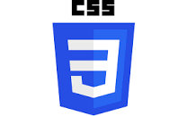
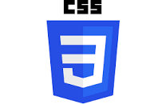

About Me
Full Stack Developer with 6 years of hands-on experience in designing, developing, and implementing applications and solutions using a range of technologies and programming languages. Seeking to leverage broad development experience and hands-on technical expertise in a challenging role as a Full-stack Developer.
Name: Sai Sreekar Teegala
Email: teegalasreekar@gmail.com
Mobile No: +91-8977400393
Skills
 



.png)
.png)
.png)
.png)
.png)
.png)
.png)
.png)
.png)
Education
2011-2015 Amara Institute of Engineering and Technology
2009-2011 Sri Chaitanya Junior College
2008-2009 The Central Public School
Work History
2022-present Technology Analyst@Infosys Limited
- Identify issues with front end code and rectify them to remove bugs.
- Responsible for writing Unit test cases for angular components, directives, and modules.
- Create unit tests to ensure code is functioning as expected.
- Worked on jasmine in testing and Karma for unit testing angular modules.
- Worked in Agile methodology to provide more efficient work and higher quality.
- Used Jira for bug tracking. Git and Bitbucket are used as version control tools.
- Responsible for developing the UI pages using Angular 12/14, HTML, CSS, Bootstrap.
- Responsible for the style, look and feel of the web page with ag-grid-angular.
2019-2022 Full Stack Developer@ Sunitha Infovision LTD
- Developing and maintaining all server-side network components Micro-Services.
- Run and maintain AWS Microservices with Node.Js Serverless Architecture
- Ensuring optimal performance of the central database and responsiveness to front-end requests
- Collaborating with front-end developers on the integration of elements.
- Designing customer-facing UI and back-end services for various business processes.
- Developing high-performance applications by writing testable, reusable, and efficient code.
- Implementing effective security protocols, data protection measures, and storage solutions.
- Running diagnostic tests, repairing defects, and providing Technical support.
- Recommending and implementing improvements to processes and technologies
- Keeping informed of advancements in the field of Node.js development.
- Developed enterprise-level applications in JavaScript Replaced Excel workflows with simple, powerful tools.
- Collaborated and worked efficiently amongst a team of tech leads, developers, and designers.
- Documenting Node.js processes, including database schemas, as well as preparing reports.
- Recommending and implementing improvements to processes and technologies.
- Continually improve our software architecture and performance
- Work collaboratively in a cross-functional and agile team of UX designers, architects and quality developers.
- Work with the product team to wireframe, execute and iterate on new features.
- Modern front end development tools such as Tailwind CSS, grid frameworks or client-side app frameworks.
2019-2019 Full Stack Developer @NODE.DIGITAL
- Coding, Compiling, Unit testing, integration, packaging and deployment of developed software.
- Create and execute unit tests and perform basic application testing Learned and worked on Jira, GitHub, GitLab, Bit Bucket, Boost AI
- Learned and worked on Jira, GitHub, GitLab, Bit Bucket, Boost AI
- Integrated Hygieia - DevOps Dashboard Hygieia Aggregates End-to-End View of the Delivery Pipeline
- Built Bit Bucket pipeline to push code to GitHub, test, deploy to UAT and Prod environments
2016-2019 UI Developer @9Logic Technologies
- Designed and developed Interactive User- Interfaces using AngularJS, HTML5, CSS3 and Bootstrap, JavaScript, jQuery
- Worked on jQuery for Client-Side Validation and display UI controls.
- Creating & Executing Test cases for different functionalities.
- Involved in requirement gathering and database design and architecture for the project.
- Created tables, stored procedures and triggers using PL/SQL.
- Identifying the possible scenarios, writing and executing the Test cases for each scenario.
- Developed RESTful Web API that provides Configuration Management data.
- Developed RESTful web API with Node JS and web3 interaction.
- Developed API for private and public blockchain for buying.
- CEEK coins to cast user vote to their favorite participant.
- Performed professional functions in software programming and analysis.
- Assisted in designing, coding, testing, deploying, maintaining, enhancing, and supporting company software systems.
- Developed new software and customized towards company needs.
- Developed interfaces to/integrating with third-party business systems
- Designed and implemented software that integrates products with third party applications or products.
- Working with medium size teams using agile development processes and working in cross functional team environment
Contact
Sreekar teegalaHyderabad,Telangana, 500018
8977400393
LinkedIn:linkedin.com/in/sai-sreekar-t eegala-a70477ab
Interests
- Learning new technologies
- playing chess, table tennis, Games
Declaration
I am keen to continue my career and prepared to work hard to achieve my organization objectives and I hereby declare that the information furnished above is true to the best of my knowledge